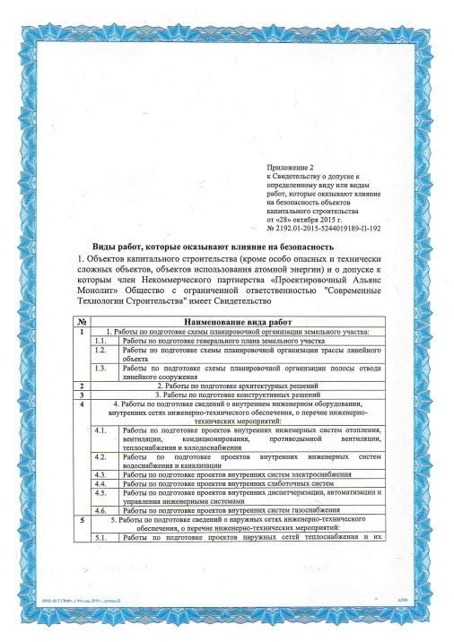
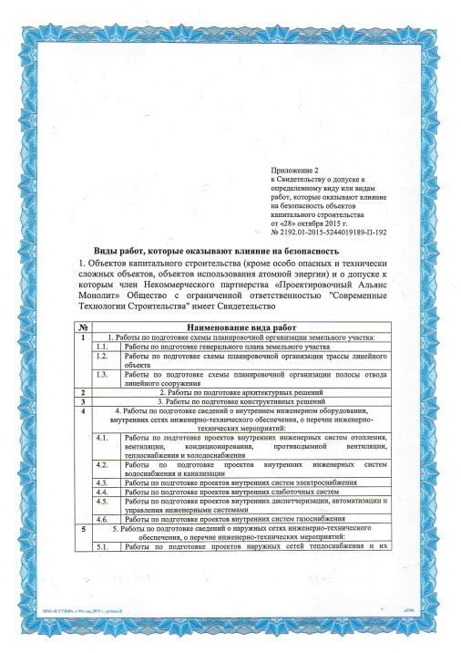
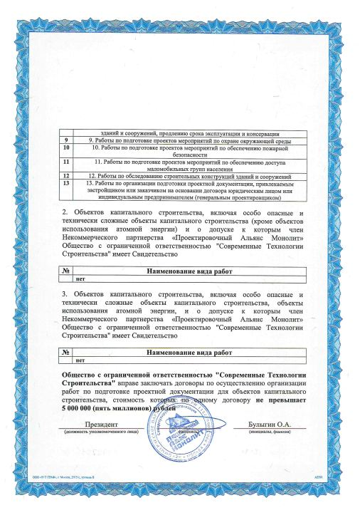
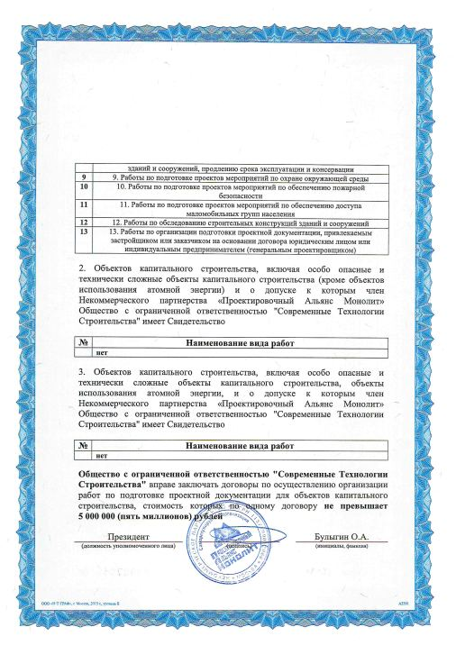

СОВРЕМЕННЫЕ ТЕХНОЛОГИИ СТРОИТЕЛЬСТВА
СТРОИТЕЛЬНАЯ ЭКСПЕРТИЗА -
ПРОЕКТИРОВАНИЕ
V
 СТРОИТЕЛЬНАЯ ЭКСПЕРТИЗА
СТРОИТЕЛЬНАЯ ЭКСПЕРТИЗА
Обследование строительных конструкций зданий, сооружений:
•объектов капитального строительства;
•нежилых и жилых помещений;
•объектов инженерной инфраструктуры;
•расчет и проверка несущей способности элементов;
•определение прочности бетона неразрушающим методом;
•проверка на соответствие объекта требованиям строительных регламентов;
•подготовка технических заключений.
 ПРОЕКТИРОВАНИЕ
ПРОЕКТИРОВАНИЕ
•индивидуальные жилые дома;
•торговые, производственные объекты;
•объекты инженерной инфраструктуры (водопровод, канализация, теплоснабжение);
•проекты планировки территории;
•перепланировка квартир;
•схемы планировочной организации земельных участков;
•расчет фундаментов;
•уменьшение санитарно-защитных зон.
ДОПОЛНИТЕЛЬНЫЕ УСЛУГИ
•получение разрешения на строительство, ввод в эксплуатацию;
•узаконивание самовольных построек;
•узаконивание выполненных перепланировок;
•перевод из жилого в нежилое;
•сопровождение сделок с недвижимостью;
•оформление гаражей и земельных участков;
•перевод категорий земельных участков.
КОНТАКТЫ
ООО "Современные Технологии Строительства"
AНижегородская область, г. Балахна, ул. Коммунистическая, д. 5
C
+7 910 129 73 77 - строительная экспертиза
+7 961 630 25 95 - проектирование
+7 920 072 90 58 - сопровождение сделок с недвижимостью
Email@ctcnn.ru
Wctcnn.ru
r
О НАС
ООО "Современные Технологии Строительства" основана в 2008 г.
За время работы зарекомендовала себя надежным и исполнительным партнером для сотрудничества.
Наши грамотные и опытные специалисты помогут решить практически любой вопрос, в срок и качественно выполняя все поставленные перед ними задачи.
СВИДЕТЕЛЬСТВО О ДОПУСКЕ К РАБОТАМ
Свидетельство о допуске к работам, которые оказывают влияние на безопасность объектов капитального строительства, регистрационный номер №2192.01-2015-5244019189-П-192 выданное саморегулируемой организацией некоммерческое партнерство «Проектировочный Альянс Монолит» регистрационный номер в государственном реестре СРО-П-192-18062014.
 
 

vСкачать [PDF 3,87Мб]
© 2016-2017
ООО "Современные Технологии Строительства"дизайн : ΚΟΜΣΤΑ
СТСУслугиКонтакты(<Обратный звонок
(<Обратный звонокX